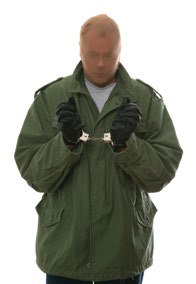

“This guy either didn’t know how to handle a gun or he was afraid that it would fire accidentally,” said police after watching a man who appeared on a bank’s security cameras. The man was holding up the bank and threatened to shoot staff. He was seen to be pointing the gun backwards. He was arrested later.
“Nobody is safe; there is always a stupid criminal out there” said Kriss Webb, the owner of a shop that was robbed in Texas. The shop, Spy Supply, sells surveillance equipment. Two daring thieves broke into the store and made off with almost $10,000 worth of electrical equipment… in a wheelie bin. During the burglary, the robbers were recorded by 17 rolling cameras. Webb said he was astounded by the burglars’ audacity. “There were numerous warnings that the shop had heavy surveillance,” he said. Webb believes that he won’t retrieve the stolen goods but he is sure that the villains will be caught. Despite his bad luck, the incident may, ironically, be a good advertisement for his business and convince people to invest more in security.
What do you do when you get lost? Ask for directions?  This is precisely what car thief Bob Bones did. Bones stole a car and then asked for directions when he found himself lost. After hijacking the car at gunpoint, he stopped and asked a news team where he was. “He asked us for directions out of the city,” said cameraman Jake Blake. “And then he just drove off.” Seconds later, the owner of the stolen car appeared in a taxi. He’d been following the criminal and jumped into a taxi when he saw his car disappearing down the road. He told the news team about the stolen car and together, they chased the robber, phoning for the police at the same time. Eventually, police apprehended the criminal and the journalists got their exclusive. The robber was arrested for aggravated robbery. ✪